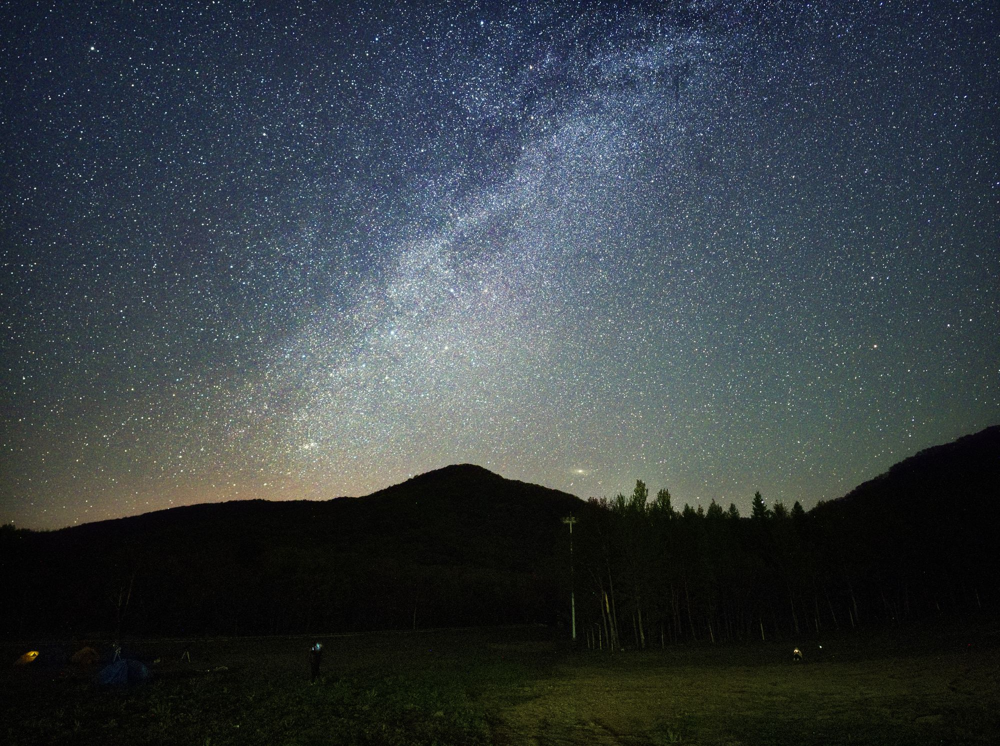

路边天文夜
协会最日常的活动。在朝阳校区东区物理学院架设 3—4 台望远镜， 面向全校师生和附近居民开放。我们会安排一名讲解员轮流介绍当晚可见的目标， 从月面环形山到土星环。
Activities
［页面导语］
常规项目
每个项目都有各自的节奏，你可以按自己的兴趣任选其一，也可以全都参加；具体安排以群消息为准。
协会最日常的活动。在朝阳校区东区物理学院架设 3—4 台望远镜， 面向全校师生和附近居民开放。我们会安排一名讲解员轮流介绍当晚可见的目标， 从月面环形山到土星环。
社团成员拍摄的精美作品，大家共同欣赏并交流拍摄心得。
不定期开展，主题从恒星演化、星系动力学到引力波与系外行星探测， 或是天文观测与古天文。
每年一次的远途观测，通宵拍摄与目视观测。 出发前进行装备分配与安全说明，现场按小组划分观测区域， 次日清晨统一返程并整理观测记录归档。
本学期日程
［排期说明］
| 日期 | 活动 | 负责小组 | 地点 | 观测 / 内容重点 | 参与方式 |
|---|---|---|---|---|---|
| ［日期］ | ［活动］ | ［负责小组］ | ［地点］ | ［观测 / 内容重点］ | ［参与方式］ |
| ［日期］ | ［活动］ | ［负责小组］ | ［地点］ | ［观测 / 内容重点］ | ［参与方式］ |
| ［日期］ | ［活动］ | ［负责小组］ | ［地点］ | ［观测 / 内容重点］ | ［参与方式］ |
| ［日期］ | ［活动］ | ［负责小组］ | ［地点］ | ［观测 / 内容重点］ | ［参与方式］ |
| ［日期］ | ［活动］ | ［负责小组］ | ［地点］ | ［观测 / 内容重点］ | ［参与方式］ |
| ［日期］ | ［活动］ | ［负责小组］ | ［地点］ | ［观测 / 内容重点］ | ［参与方式］ |
| ［日期］ | ［活动］ | ［负责小组］ | ［地点］ | ［观测 / 内容重点］ | ［参与方式］ |
| ［日期］ | ［活动］ | ［负责小组］ | ［地点］ | ［观测 / 内容重点］ | ［参与方式］ |
［天气与顺延预案说明］
观测记录
［观测记录的用途说明］
| 日期 | 站点 | 目标 | 器材 | 累计曝光 | 天空条件 | 记录人 |
|---|---|---|---|---|---|---|
| ［日期］ | ［站点］ | ［目标］ | ［器材］ | ［累计曝光］ | ［天空条件］ | ［记录人］ |
| ［日期］ | ［站点］ | ［目标］ | ［器材］ | ［累计曝光］ | ［天空条件］ | ［记录人］ |
| ［日期］ | ［站点］ | ［目标］ | ［器材］ | ［累计曝光］ | ［天空条件］ | ［记录人］ |
| ［日期］ | ［站点］ | ［目标］ | ［器材］ | ［累计曝光］ | ［天空条件］ | ［记录人］ |
一年四季
［季节节奏说明］
［说明文字］
［说明文字］
［说明文字］
